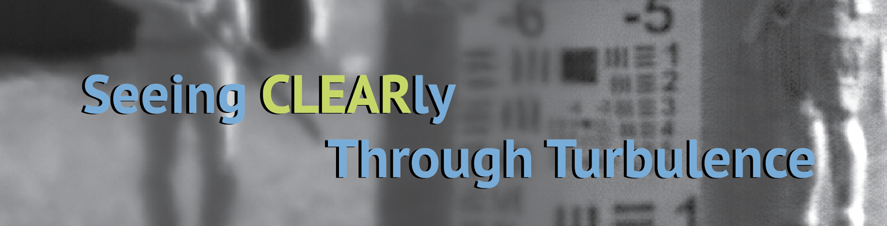
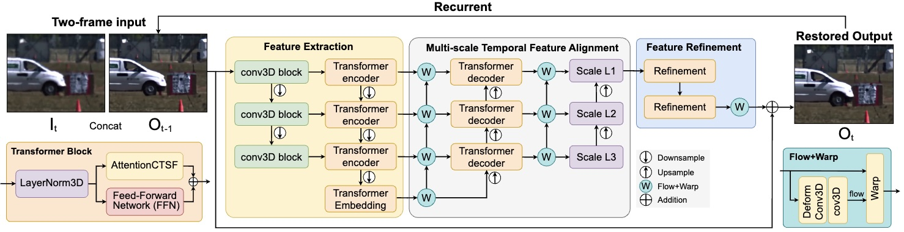
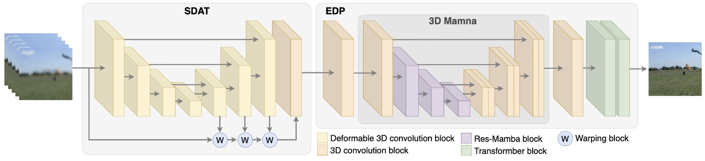
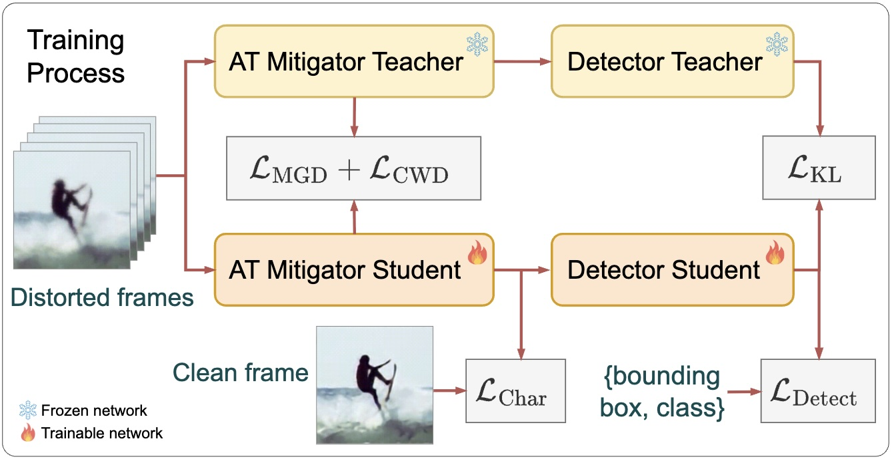
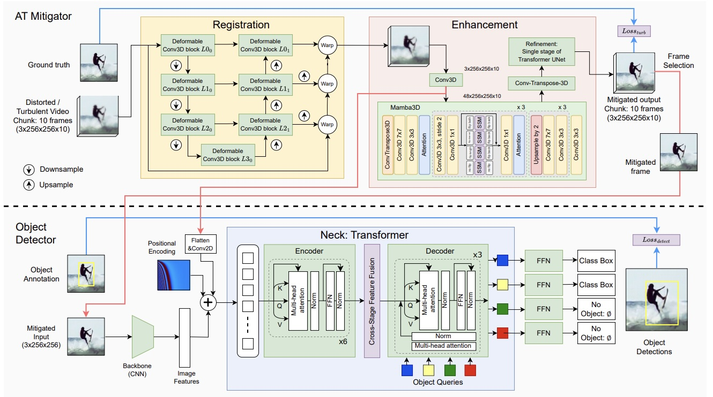
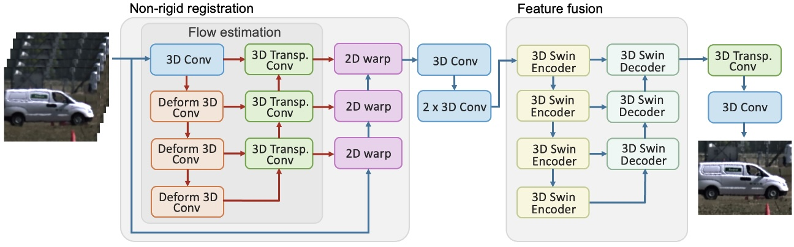

DeepCLEAR: Intelligent Atmospheric Turbulence Removal and Object Recognition
AI-Based Methods for Mitigating Atmospheric Distortion
and Enhancing Object Detection and Tracking



Aim
Atmospheric turbulence distorts visual imagery, posing significant challenges for information interpretation by both humans and machines. Traditional approaches to mitigating atmospheric turbulence are predominantly model-based, such as CLEAR, but are computationally intensive and memory-demanding, making real-time operations impractical. In contrast, deep learning-based methods have garnered increasing attention but are currently effective primarily for static scenes. This project proposes novel learning-based frameworks specifically designed to support dynamic scenes.
Our objectives are twofold: (i) to develop real-time video restoration techniques that mitigate spatio-temporal distortions, enhancing the visual interpretation of scenes for human observers, and (ii) to support decision-making by implementing and evaluating real-time object recognition and tracking using the restored video.
Methods
- RMFAT: Recurrent Multi-scale Feature Atmospheric Turbulence Mitigator (AAAI2026)

RMFAT, a Recurrent Multi-scale Feature Atmospheric Turbulence Mitigator, restores videos efficiently and consistently by using a lightweight two-input recurrent framework with multi-scale feature encoding and temporal warping to enhance spatial detail and temporal coherence.
- MAMAT: 3D Mamba-Based Atmospheric Turbulence Removal and its Object Detection Capability (AVSS2025) [PDF] [Code]

MAMAT is a novel Mamba-based method in which the first module employs deformable 3D convolutions for non-rigid registration to reduce spatial shifts, while the second module enhances contrast and detail. Leveraging the advanced capabilities of the 3D Mamba architecture, experimental results demonstrate that MAMAT outperforms state-of-the-art learning-based methods.
- JDATT: A Joint Distillation Framework for Atmospheric Turbulence Mitigation and Target Detection. (BMVC2025)
[ PDF] 
JDATT is a knowledge distillation framework designed to reduce model size and improve inference speed. We introduce a joint end-to-end training strategy that preserves image quality through reconstruction loss, Channel-Wise Distillation loss, and Masked Generative Distillation loss, while maintaining detection performance via detection loss and Kullback–Leibler divergence..
- DMAT: An End-to-End Framework for Joint Atmospheric Turbulence Mitigation and Object Detection. (WACV2026)

DMAT is an end-to-end framework that jointly improves visual quality and object detection by compensating for distorted features. It enables knowledge exchange between low-level distortion correction in the atmospheric turbulence mitigator and high-level semantic features from the detector. The AT mitigator employs a 3D Mamba-based architecture to model spatio-temporal turbulence effects, and the entire system is optimised jointly.
- DeTurb: Atmospheric Turbulence Mitigation with Deformable 3D Convolutions and 3D Swin Transformers (ACCV2024)

The DeTurb framework combines geometric restoration with an enhancement module. Random perturbations and geometric distortions are corrected using a pyramid architecture with deformable 3D convolutions, producing aligned frames. These frames are then reconstructed into a sharp, clear image through a multi-scale 3D Swin Transformer architecture.
Research team
Core
- N. Anantrasirichai: Lead academic
- D.R. Bull and A. Achim: Co-Lead academics
- Paul Hill: Postdoctoral researcher [Review paper
] [Paper1] [Paper2] [ Real dataset] [Synthetic datasets] - Zhiming Liu: Research associate [Paper1] [Paper2]
Undergrad/Postgrad projects
- Zhiming Liu (2025), Joint Distillation Framework for Turbulence Mitigation and Target Detection [Paper
] - Zhicheng (Frederick) Zou (2024), Enhancing Long-Range Imaging through Deep Learning: Mitigating Atmospheric Turbulence [Paper] [Code]
- Disen Hu (2022), Atmospheric Turbulence Object Detection in Video Using Deep Learning [Paper]
- Rachel Lin (2022), Dealing with Atmospheric Turbulence Distortion in Video Sequences
- Haziq I.B.Mohammed Shafri (2020), Multi-Input Denoising for Atmospheric Turbulence Mitigation in Video
- Jingxuan Wang (2020), Atmospheric turbulence mitigation in video using deep learning
- Jing Gao (2019), Atmospheric turbulence removal using convolutional neural network [arXiv]
Downloads
Publications
- RMFAT: Recurrent Multi-scale Feature Atmospheric Turbulence Mitigator. Z Liu, N Anantrasirichai, AAAI Conference on Artificial Intelligence. 2026
[ PDF] [Project] [Code] - DMAT: An End-to-End Framework for Joint Atmospheric Turbulence Mitigation and Object Detection. P Hill, Z Liu, A Achim, D Bull, N Anantrasirichai, IEEE/CVF Winter Conference on Applications of Computer Vision. 2026
[ PDF] [ CODE] [Dataset]- JDATT: A Joint Distillation Framework for Atmospheric Turbulence Mitigation and Target Detection. Z Liu, P Hill, N Anantrasirichai, 36th British Machine Vision Conference. 2025
[ PDF] - MAMAT: 3D Mamba-Based Atmospheric Turbulence Removal and its Object Detection Capability. P Hill, Z Liu, N Anantrasirichai, 21st IEEE International Conference on Advanced Visual and Signal-Based Systems, 2025 [PDF] [Code]
- Deep Learning Techniques for Atmospheric Turbulence Removal: A Review. P Hill, N Anantrasirichai, A Achim, D Bull. Artificial Intelligence Review. 2025
[ PDF] [ATD Dataset]- DeTurb: Atmospheric Turbulence Mitigation with Deformable 3D Convolutions and 3D Swin Transformers. Z. Zou and N. Anantrasirichai, Asian Conference on Computer Vision, 2024
[ PDF] [Code] [ATD Dataset]- Atmospheric Turbulence Removal with Complex-Valued Convolutional Neural Network. N. Anantrasirichai, Pattern Recognition Letters. 2023
[ PDF] - Object Recognition in Atmospheric Turbulence Scenes. D. Hu and N. Anantrasirichai, European Signal Processing Conference. 2023.
[ PDF] [ Code] - DMAT: An End-to-End Framework for Joint Atmospheric Turbulence Mitigation and Object Detection. P Hill, Z Liu, A Achim, D Bull, N Anantrasirichai, IEEE/CVF Winter Conference on Applications of Computer Vision. 2026
Datasets
Related research
Related project
- CLEAR: Model-based methods for mitigating atmospheric distortions using Dual Tree Complex Wavelet Transform (DT-CWT)
Related publications from VI-Lab
- A unified framework for contextual lighting, colorization and denoising for UHD sequences . N Anantrasirichai and D R Bull. IEEE ICIP, 2021
- Artificial intelligence in the creative industries: A review. N Anantrasirichai and D R Bull, Artif Intell Rev 55, 2022
- ST-MFNet Mini: Knowledge distillation-driven frame interpolation. C Morris, D Danier, F Zhang, N Anantrasirichai, D R Bull. IEEE International Conference on Image Processing. 2023